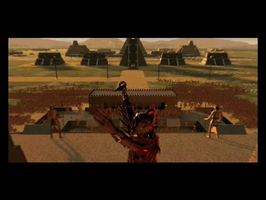
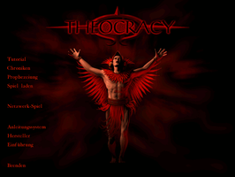

Theocracy
Archivierte Anleitung
Dieser Artikel wurde archiviert, da er - oder Teile daraus - nur noch unter einer älteren Ubuntu-Version nutzbar ist. Diese Anleitung wird vom Wiki-Team weder auf Richtigkeit überprüft noch anderweitig gepflegt. Zusätzlich wurde der Artikel für weitere Änderungen gesperrt.
Zum Verständnis dieses Artikels sind folgende Seiten hilfreich:
Das Echtzeitstrategiespiel Theocracy ist das Erstlingswerk des ungarischen Softwarestudios Philos. Man startet in Mittelamerika im Jahr 1419. Innerhalb der nächsten 100 Jahre muss der Spieler entweder durch diplomatisches Geschick oder den Einsatz von Waffen eine Allianz mit den restlichen Provinzen schaffen um der Eroberung des Aztekenreiches durch Hernán Cortés im Jahre 1519 zu entgehen. Durch das Geschick des Spielers kann die Geschichte neu geschrieben werden...
|  |  |
| Intro | © Philos Laboratories |
Installation¶
Da die Installation von CD nicht immer gelingt empfiehlt es sich den Inhalt des Datenträgers in das Homeverzeichnis zu kopieren. Hier legt man im Vorfeld einen separaten Ordner z.B. THEOCRACY an. Nachdem alle Dateien in das neue Verzeichnis kopiert wurden sollten die Rechte [5] entsprechend angepasst werden. Nachdem dies geschehen ist, welchselt man dort in den Unterordner linux und startet mit Root-Rechten die Installation [1]:
./inst.linux
Alle folgenden Fragen bestätigen. Eine falsche Angabe kann später noch korrigiert werden. Die Installation erfolgt nach /usr/games/theocracy_base und kann nicht verändert werden. Mit einem Editor [2] und Root-Rechten die Datei /etc/ld.so.conf öffnen und ergänzen:
/usr/games/theocracy_base/
Nun die Bibliotheken neu einlesen lassen [1]:
sudo ldconfig
In einem Editor [2] in der Datei ~/.theocracy/mvos.cfg die Sprache setzen:
[game] language=german
CD2¶
Damit man CD2 nicht immer bei Spielstart im Laufwerk haben muss erstellt man mit Root-Rechten den Ordner cd2 [1], wechselt auf das CD-Laufwerk und kopiert den kompletten Inhalt von CD2 auf das System:
sudo mkdir /usr/games/theocracy_base/cd2 sudo cp -R * /usr/games/theocracy_base/cd2
In der Datei ~/.theocracy/mvos.cfg noch die Pfade [2] anpassen:
cdrom_device=/usr/games/theocracy_base/cd2 cdrom_mountpoint=/usr/games/theocracy_base/cd2
Bei Spielstart wird CD2 nicht mehr benötigt, da die erforderlichen Daten nun auf dem System vorhanden sind.
Patch¶
Den Patch zum Spiel lädt man sich von holarse-linuxgaming.de  herunter. Nachdem man die Datei theocracy_reconf.tgz entpackt [3] hat spielt man diesen ein [1]:
herunter. Nachdem man die Datei theocracy_reconf.tgz entpackt [3] hat spielt man diesen ein [1]:
sudo ./reconf
Das Spiel kann nun mit dem Befehl theocracy gestartet [4] und bei Bedarf ein Menüeintrag [6] vorgenommen werden. Sollte der Patch nicht verfügbar sein kann man unter mvos.cfg die notwendigen Einstellungen selber vornehmen.
Hinweis:
Das Spiel startet nur bei einer Farbtiefe von 16 bit. Es lohnt sich ein XServer_für_Spiele mit eigener xorg.conf.
Tipps¶
Vollbildmodus¶
Um den Vollbildmodus zu (de)aktivieren in der Datei ~/.theocracy/mvos.cfg die entsprechende Änderung [2] vornehmen. Zum aktivieren der Vollbildansicht den Wert true setzen - ansonsten false:
fullscreen=true
Einstellungen¶
Sofern bei der Installation fehlerhafte Angaben gemacht wurden kann man diese in der Datei ~/.theocracy/mvos.cfg korrigieren [2]:
[vmachine] soundcard=/dev/audio cdrom_device=/dev/cdrom cdrom_mountpoint=/media/cdrom0 fullscreen=false [game] language=german
Starter¶
Sofern man einen eigenen XServer aufgesetzt hat muß der Starter bearbeitet werden. Zuerst wird eine Kopie in /usr/local/bin erstellt [1]
sudo cp /usr/games/theocracy /usr/local/bin/theocracy-ok
und anschließend die Datei /usr/local/bin/theocracy-ok mit Root-Rechten bearbeitet [2]. Hier die Zeile
1 | $THEOC_INST_DIR/$THEOC_EXE >/dev/null || echo "Execution of $THEOC_INST_DIR/$THEOC_EXE failed!" |
suchen und entsprechend ändern:
1 | xinit $THEOC_INST_DIR/$THEOC_EXE -- :1 -config xorg-games.conf |
Das Spiel kann nun mit theocracy-ok gestartet [4] werden.
Deinstallation¶
Um das Programm zu entfernen sind folgende Schritte notwendig [1]:
sudo rm -dr /usr/games/theocracy_base #löscht den Ordner sowie dessen Inhalt rm -dr ~/.theocracy #löscht den Ordner sowie dessen Inhalt sudo rm /usr/games/theocracy #löscht die Datei sudo rm /usr/games/theoserver #löscht die Datei

Infobox¶
| Theocracy | |
| Genre: | Echtzeittaktik |
| Sprache: |   |
| Veröffentlichung: | 2000 |
| Publisher: | Ubisoft Entertainment SA |
| Systemvoraussetzungen: | Prozessor mind. 233 MHz - mind. 64 MB RAM - mind. 400 MB Festplattenspeicher - Graphikkarte (8+ MB RAM) |
| Medien: | CD (2) |
| Läuft mit: | nativ |
- Erstellt mit Inyoka
-
 2004 – 2017 ubuntuusers.de • Einige Rechte vorbehalten
2004 – 2017 ubuntuusers.de • Einige Rechte vorbehalten
Lizenz • Kontakt • Datenschutz • Impressum • Serverstatus -
Serverhousing gespendet von